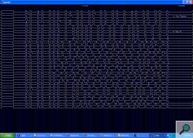

Why a Remote?
The Xbox is a video game console developed by Microsoft. An add-on for that console, the DVD Playback Kit, allows a user to watch DVDs using the Xbox, using the included IR remote control to navigate the menus and control playback. However, one notable missing feature of that remote is the lack of a Power button to turn on the Xbox. This normally isn't an issue, as to watch a DVD the user needs to go to the machine and insert the disc in the console (which automatically turns it on). However, people who have modified their Xbox to run custom software (such as dedicated media software, such as the Xbox Media Centre) could benefit from a power button on the remote, as the media that is played is often stored on the onboard hard drive, or on a network drive. The aim of this project is to make a modification to the Xbox console that would allow the user to power-up the console using the standard Xbox remote control.
Planning
Since the Xbox processor does not run when the console is offline (for obvious reasons), the modification could not be software only: it would require hardware modifications. After a quick search on the web, I found a web site that detailed the construction of a small circuit board that would receive and decode the signals from the remote and power up the Xbox when the Display button was pushed. However, the chip used in that modification, although relatively cheap, required an expensive programmer to setup. After looking at the web site of the manufacturer of that chip, I was pleased to learn that a 'Starter Kit' was available, which would provide a relatively cheap USB programmer. Unfortunately, that programmer was unable to program the chip used in the previously found design. Furthermore, since the source code was not made available on the web site, another chip could not be used. For that reason, I decided to redesign a new circuit from scratch that would use a different chip.
After some rumination, I listed the following features that I would like to implement in my design:
- Ability to turn on the Xbox after holding a button on the remote (e.g. 'Display', which is the top-most button on the remote)
- Ability to turn off the Xbox after holding a button on the remote for more than x seconds (e.g. after holding 'Display' for 5 seconds)
- Ability to hard-reboot the Xbox after holding a button on the remote for more than x seconds -- this would be independent of the software running on the Xbox and would allow the system to be restarted after the software has frozen the machine
- Detachable connections on the circuit -- this would facilitate installation and testing of the modification
- An indicator to show when the circuit is receiving a signal
- Ability to reprogram the chip after it's been soldered on the circuit
- Ability to disable the indicator and the 'hold-button-for-additionnal-functions' functionalities using dip-switches
Design
{kind=link}
When the Xbox console is powered down, only the power from the standby rail is available from the power supply. However, different versions of the Xbox console exist: the first version provide 3.3V of power on standby, while more recent versions provide 5V on standby. This means that in order to be compatible with all consoles, the circuit must function using either 3.3V or 5V of power. Fortunately, the chip supplied with the PICkit 1 Flash Starter Kit from Microchip, the PIC12F675, had an operating voltage range of 2.0V to 5.5V. Using the chip with a voltage of 3.3V would restrict the chip clock frequency to 4MHZ, but that would be more than sufficient for the tasks at hand. Since that chip could perform all that was needed (variable input voltage, enough input/output lines, availability of a Timer, ability to be reprogrammed when installed in a circuit) it was decided to use that chip in the final design. Other features provided by the chip would later be used, such as the sleep mode and the watchdog timer.
An IR receiver was then selected. Again, that component needed to be usable at both 3.3V and 5V of supply voltage. The TSOP34838 from Vishay-Telefunken was selected for this.
{kind=link}
After having ordered a few samples of the required components, I built a simple prototype on a breadboard. I used some of the then-unused pins to connect the breadboard to the programmer -- this would allow me to reprogram the chip without having to extract the chip from the breadboard and install it on the programmer each time I wanted to reprogram the chip. I also used a few resistances to bring the supply voltage down from the 5V supplied by the programmer to 3.33V for testing purposes.
The circuit created in the first prototype was quite simplistic: the IR receiver was connected to the microcontroller and would supply it with the signals. The microcontroller, in turn, was connected to a led that would be used for debugging (e.g. on = we're receiving a signal, off = we're receiving nothing). At that point, I was more concerned about developing a basic program for the microcontroller that would receive, decode and interpret the signals from the remote control.
Software
{kind=link}
Having a working prototype, I started work on the software side of the project. Although it was possible to write the software in C, I chose to write it in assembler instead: this would allow better control over the timings in the program as well as simplify access and configuration of the ports. The RISC microcontroller needed to be programmed to receive and decode the signals from the IR receiver, as well as take the necessary steps when a signal was detected. But what was it that I needed to detect? Using a home-made IR receiver connected to a linux-based computer, I was able to record the signals emitted by the Xbox remote control. From this, I could see which parts of the signal represented the header, which parts represented the stop bit and, most importantly, how the data was encoded in the signal. As it can be seen from the diagram on the right, the signal is encoded in the width of the '0's, that is the width of the times when the signal is low. A short low pulse represents a 0 while a long low pulse represents a 1. For the exact timing characteristics of the signal, I used the information available in the LIRC remote database.
Initially, I was going to use the Timer0 of the microcontroller to measure how long the various parts of the signal were. For instance, when I detect a transition from 0 to 1, I would clear the timer and wait for the next transition. The content of the timer would indicate how long that part of the signal was. However, this proved to be impractical as the timer could not be cleared fast enough to be of any real use. The second timing method that I tried involved a counting loop: the time to the next transition would be measured by having a loop in my program that would increment a counter when no transition was detected. Since the clock ran at a constant 4MHZ and since I knew exactly how long each instruction was, I could calculate the length of time elapsed since the last transition with little difficulty.
{kind=link}
Once I knew how to reliably measure the various components of the IR signal, I could begin reading the data contained in said signal. Since the signals for that particular remote are composed of 24 bits and since the memory on the PIC12F675 is 8-bit, I would need 3 bytes to store the resulting signal. That signal would then be compared to the codes obtained on the LIRC remote database: if the received code matched either the 'power-on' code or the 'reset' code, then further actions would be taken. First, the software checks if the Xbox is already on: if it isn't, the software sends a signal to power-up the xbox and waits for 5 seconds. If the Xbox was already on, then more checks are needed.
Another problem I encountered was the detection of the held-down buttons. When a button is held-down on the Xbox remote, the same signal is sent continuously. How would I detect if the button is being held down? For this I used the second timer of the microcontroller. If, within one timer loop, a correct signal is received, then that timer loop is marked as 'held' and a counter is increment. If, during the next timer loop, no signal is received or if the 'wrong' signal is received, then the counter is cleared. When the counter reaches a certain number (e.g. 10 when using a timer loop period of 0.5 seconds), the action associated with that button is taken (either power-off or reboot).
Certain features of the microcontroller allowed me to simplify the final circuit that I would make. For instance, the presence of programmable weak pull-ups on the input/output ports allowed me to do without a resistor on the dip-switches: I would simply need to place the dip-switches between the ground and the ports (with weak pull-ups active).
After those features were completed, I implemented secondary features that, while not necessary, allowed me to better understand how the microcontroller worked. First, I activated the microcontroller's watchdog timer. If, for some reason, the software were to hang up, then the watchdog would automatically reset the chip. Second, I set the chip to enter sleep mode after 5 minutes of inactivity. The power savings from this are barely enough to be mentioned, however... Finally, I reorganized the input/outputs of the chip to allow the use of in-circuit programming. This would allow me to reprogram the chip even after it has been soldered to the board.
Construction
{kind=link}
Once both the prototype and the software were working properly, I started working on the final product. I chose to use a perforated board to mount the components on. Aiming to pack the components in as little space as possible, I drew a schematic that would tell me where to place the components and where connections would need to be placed.
As it can be seen from the perforated board schematics on the right, I decided to put two connectors on the board: one would provide power and send signals to the xbox while the other would receive data from the IR sensor and send signals to the status LED.
Construction of the cables that would interface with the Xbox and receive the IR signals proved to be harder than it should have been: I did not have the equipment required to easily setup the Molex connectors. This caused me to spend more time working on the connectors than on the actual wiring.
{kind=link}
To power the circuit, I would be using power from the standby rail on the Xbox power supply. But how could I get access to that power? There are no free power supply connectors in the Xbox, and certainly not one that would supply standby power. I could have made a dongle that would sit between the ATX connector on the motherboard and the connector of the power supply, but that would have been too expensive and labor-intensive. I could also have attached my cables to the pins of the ATX connector, but it proved to be too difficult to secure the wires properly. The solution I used was to use wire-taps, usually used to make repairs in automobiles. The taps simply attach around the wire going from the power supply to the Xbox main board. Those taps are the red devices in the picture to the left. The circuit is wrapped in plastic to prevent short-circuits when the Xbox case is closed.
The last wire going to the remote circuit is used to send the power-up and power-down signals to the xbox. That wire had to be soldered to the front panel of the console. It would have been possible to create a solder-less solution, but this would have required setting up a dongle that would have sat between the Xbox mainboard and the Xbox front panel. As for the ATX connector, this would have been too expensive and too difficult to implement.
Problems
{kind=link}
The first problem that I encountered during this project was the imprecision of the Timer0 of the microcontroller, as previously discussed.
The only problem that I encountered when creating the final circuit was due to a mistake on my initial schematics: I had inverted the power and ground supplies for the microcontroller. This, of course, prevented the circuit from working at all. Rather than restarting a new circuit on a new board, I worked around the problem by cutting the original traces on the perforated board and creating new ones.
Another problem I encountered was only revealed when I tried to make a second copy of the circuit. I had fine-tuned the timing parameters of my signal reception routines to work for only one microcontroller, assuming that all microcontrollers would be using the exact same clock frequency. What I did not know was that the internal clock on the microcontrollers, while tunable, can still differ by up to 1%. I resolved this problem by giving more lenient timing values to my software.
Conclusion
{kind=link}
This project was, in addition to being quite useful, very beneficial for me. It allowed me to touch RISC programming for the first time, to experiment with microcontrollers and to sharpen my skills with a soldering iron.
People who would like to build their own Xbox remote add-on are free to make use of the resources that I have placed at the end of this document. The source code for the microcontroller is provided, though small modifications would probably be required if you decide to use a chip other than the PIC12F629/675. If you have any questions or comment, feel free to drop me an email.
Additional Documents
Various schematic files: circuit - peripherals cable - power cable - programming - circuit board
{kind=link}
{kind=link}
{kind=link}
{kind=link}
{kind=link}
Code for PIC12F629/675: source (.asm) - compiled (.hex)
Required components for the Xbox Remote Add-on